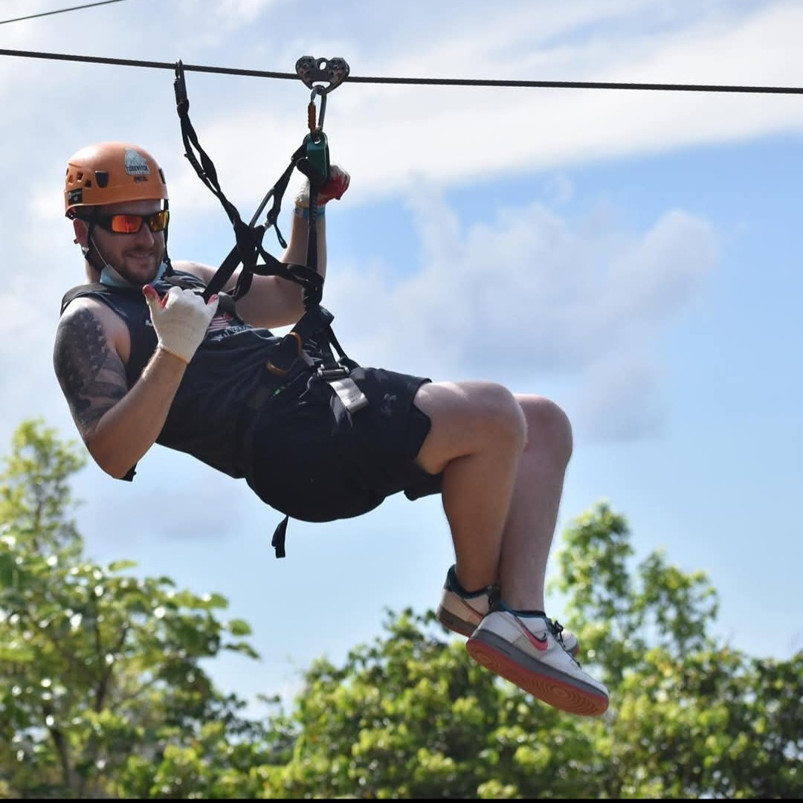

Let's Connect!
Feel free to reach out to me via email or connect with me on social media. I'm always open to discussing new opportunities, collaborations, or just having a friendly chat.
- Tyler.R.Dougherty@Gmail.com
- Td845@Drexel.edu


I'm a U.S. Army veteran with a passion for sports and the outdoors. I love playing golf, staying active, and spending quality time with my family and dog. Whether it's on the course or just relaxing at home, I enjoy making the most of every moment.
Over 4 years of experience in the U.S. Army as an Intelligence Systems Maintainer and Integrator, 1 year as a Field Service Technician, and over 6 years as a Field Operations Leader. Maintained, upgraded, and configured multiple systems simultaneously while also having experience in general computer repair and installation. Equally capable of working alone or as a member of a team, and comfortable with operating in a high stress environment. Ability to communicate clearly and concise in order to facilitate further the job at hand. Qualifications include:
The CompTIA Certified Community is a global network of individuals who have earned CompTIA certifications—such as A+, Network+, Security+, and others. Being part of this community means you’ve demonstrated knowledge and skills in IT, and you're now connected to a broader professional ecosystem.
Known for the CISSP certification, the (ISC)² community is ideal for anyone serious about a long-term, credible career in cybersecurity. It connects professionals through shared values of trust, competence, and continuous improvement, while offering real-world benefits like career support, education, and networking.
The Cisco Learning Network community is an online hub created by Cisco to support individuals pursuing IT and networking careers, especially those working toward Cisco certifications like CCNA, CCNP, and CCIE. It’s a learning-focused, collaborative environment designed to help people grow technical skills, connect with peers, and advance professionally in networking, cybersecurity, cloud, and infrastructure.
The Cloud Native Computing Foundation (CNCF) community is a global, open-source community that fosters the development and adoption of cloud-native technologies—tools and practices that allow applications to be built, deployed, and scaled in modern, dynamic environments like Kubernetes, containers, and microservices.
Feel free to reach out to me via email or connect with me on social media. I'm always open to discussing new opportunities, collaborations, or just having a friendly chat.